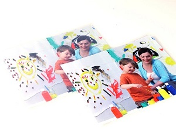

Keeping Your Laminator in Top Condition: A Performance Checklist
Many of the most common issues users experience with laminating have simple solutions. Understanding how to properly use laminating pouches and how to maintain your machine means fewer wasted pouches and better quality laminating results. Use these easy tips to improve your laminating machine performance.
Cloudy
Wavy
Good
Eliminating cloudy laminated documents
All laminating pouches have a slightly cloudy appearance before they are sealed, since the adhesive has not been thermally activated. If you have run the pouch through your machine and it still has a milky look, most likely the laminator is not hot enough and you need to check the temperature setting. With laminators without temperature adjustments, most likely the cloudiness is caused by a pouch that is too thick. Check your laminator manual to ensure the proper pouch mil thickness.
Eliminating wavy documents
When a laminating pouch has a rippled appearance after being run through the machine, it probably means that the heat is set too high. If you own a machine with adjustable temperature, back the heat down incrementally until the waviness disappears. If you're using a machine without that option, then you are most likely using a pouch that is too thin for that machine to laminate properly.
Preventing the pouch from coming unsealed after trimming
Leave a 1/8" border around your document in order to maintain a proper seal. Trimming away more than that may result in some or all of the edges becoming exposed to moisture or humidity. When this occurs, the paper absorbs the moisture and causes the lamination adhesive to release, or delaminate. Most importantly, only trim after you laminate, not before and only after the laminated document has cooled.
Smooth lamination and jam prevention tips
Proper centering of your document can help frequent jamming. Prepare your pouch and document for laminating. Insert the document straight, closed side first. Make sure the document touches the leading sealed edge. Also make sure the pouch is not too large for the document. Having a machine with Jam Release is helpful, as it disengages the jammed pouch for easy re-centering or removal. Auto Reverse is another feature for jam removal, reversing out the jammed pouch at the touch of a button.
Reducing the stickiness of rollers
Use the cleaning sheet that comes with your laminator to remove excess adhesive that has built up on the rollers. Insert the laminator cleaning sheet through the machine after every laminating session to ensure smooth rollers. Sticky rollers can not only cause jams they can leave blemishes on your laminated documents. Both outcomes cause many users to discard their laminator as defective, when it just needs a cleaning.
What pouches to use and when
Pouch selection ensures improved laminating quality depending on size and thickness. Also for self-adhesive (cold pouches) be sure to only use the cold setting on your laminator.
Pouch Size
Laminating pouches come in many different sizes. Letter size is generally the most popular. However, pouches also come in menu size for creating organizers, legal size for making maps, or photo size for creating name tags. Selecting the appropriate pouch size for your laminating needs will ensure that your document will be completely sealed and protected.
Pouch Thickness
Selecting a pouch thickness depends on the laminating project. The higher the laminating pouch thickness, the more rigid the laminated document will turn out. Pouches generally come in 1.5 mil, 3 mil, 4 mil, 5 mil, 7 mil, and 10 mil. Thicker laminating pouches, such as 7 mil and 10 mil, will be very stiff and sturdy for signage. 5 mil and under will be more flexible and thin, excellent for dry erase laminated documents. When working with different pouch thicknesses, start with the thinnest pouches first.
Understanding proper maintenance and usage, helps maintain a machine's performance for many years so you may continue creating useful laminated projects.